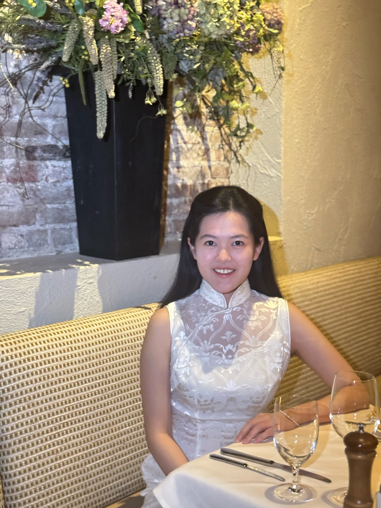

I grew up in Guangzhou, spent my high school years in Melbourne, and now call Cambridge home as a junior at MIT, double-majoring in Mathematics and AI & Decision-Making.
I'm drawn to the inner workings of large language models — my research spans LLM interpretability, multi-agent AI systems, and AI fairness, with work across Harvard Medical School, IBM Research, and MIT CSAIL. On the industry side, I was an AI/ML intern at Microsoft in Redmond, and I'll be joining Tower Research Capital in New York as a Quant Trading Intern next summer.
Before MIT, I represented Australia in international math olympiads including the IMO and EGMO. Outside of work, I'm usually hunting for great foods, reading, or planning my next trip somewhere new.
